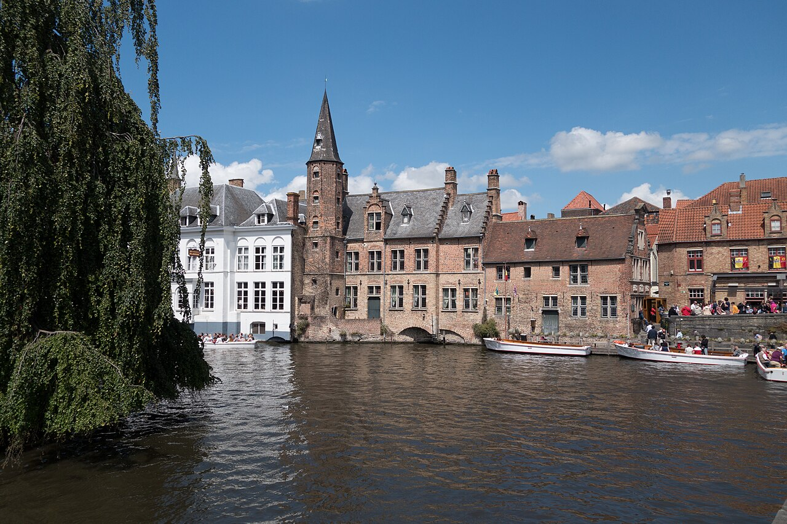

Бельгия

Бельгия — страна, которая не кричит о себе и потому всегда выигрывает. Брюгге — северная Венеция без пафоса: каналы, лебеди, три колокольни; приходите вечером после отъезда дневных групп — и город станет вашим. Утро — на лодке по каналам: с воды видно всё, что с земли скрыто за фасадами, а лодочник расскажет, где снимали «В Брюгге» и зачем башне 366 ступеней. Гент — второй акт и любимый сюжет художников: набережная Граслей вечером, когда зажигаются фонари, работает лучше любой галереи. Антверпен — для стиля: мода, алмазы и вокзал, который выглядит как дворец, потому что у него было время на репетиции. Гастрономия — отдельная страна: фритки с майонезом на рынке, вафли тёплыми с первого шага, шоколад по стилям и крепостям, и пиво — от ламбиков с вишней до тёмной квадрюпель из монастыря, где рецепт держат в тайне. Бельгийское пиво дегустируйте по стилям, а не по брендам — за одну неделю вы соберёте словарь вкусов, который останется с вами надолго.
Что знать перед поездкой
- Брюгге — вечером, после отъезда групп
- Фри́тки — на рынке, не в фастфуде
- Пиво — дегустируйте по стилям